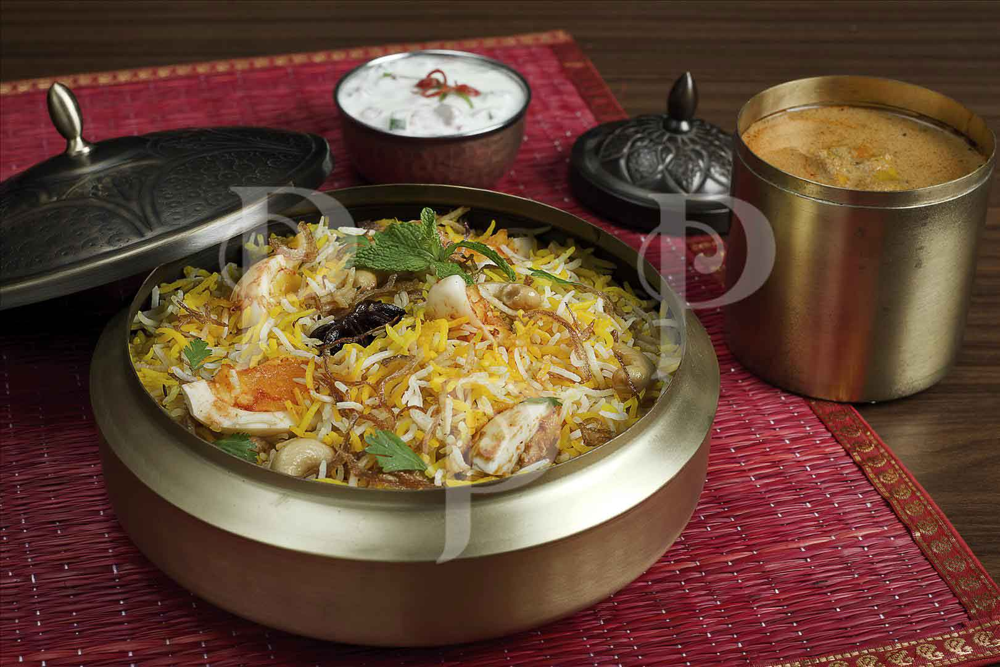

We are pioneer in the food industry service more than [x] members daily since decades
EGG BIRYANI:
Egg biryani is a delicious and unique variant of biryani that features hard-boiled eggs as the main protein
ingredient. It's a great option for vegetarians or for those looking to try something a little different from the
traditional meat-based biryanis. Heres an overview of egg biryani
SERVING:
Accompaniments: A Egg biryani can be enjoyed on its own or with side dishes like:
Raita: A cooling yogurt-based condiment often mixed with cucumber, mint, and spices.
Salad: A simple salad of onions, tomatoes, and cucumbers with a dash of lemon juice.
Pickles: For an extra tangy kick.

CHICKEN BIRYANI:
Chicken biryani is a rich and aromatic rice dish and know for its vibrant flavours and complex layering.
The This beloved dish, originating from the Indian subcontinent, features tender pieces of chicken cooked
with basmati rice, a blend of spices, and often garnished with fresh herbs and crispy fried onions. Heres
a more detailed description.
SERVING:
Accompaniments: Chicken biryani is often served with side dishes such as raita (a you ghart basedcondiment
with cucumber and spices), salad, or a boiled egg. Some variations may be accompanied by a simple cucumber
and onion salad.
Overall, chicken biryani is a hearty and satisfying dish, celebrated for its rich flavors,fragrant spices,and
the perfect balance of textures. Its a staple in many households and is often enjoye during special occasions
and festive gatherings.
Mutton BiMUTTON BIRYANI
Mutton biryani is a hearty and flavorful variant of biryani that uses mutton (or goat meat) as the primary
protein. It's known for its rich taste and robust spices, and it's often considered a more indulgent option
compared to chicken biryani. Heres a detailed description of mutton biryani:
SERVING:
Accompaniments:Mutton biryani is often served with raita (a cooling yogurt-based condiment), salad or a
boiled egg. It can also be accompanied by a side of pickles or a simple cucumber and onion salad.
Overall,mutton biryani is a celebratory dish, rich in flavors and textures, making it a favorite for special
occasions and festive meals. Its deep, aromatic qualities and the tender, well-seasoned mutton make it a
satisfying and indulgent meal